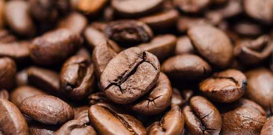
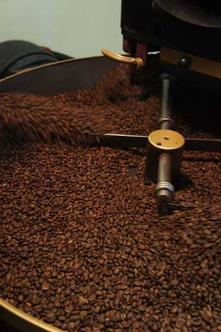
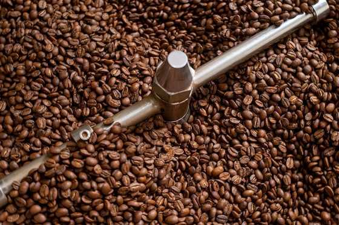
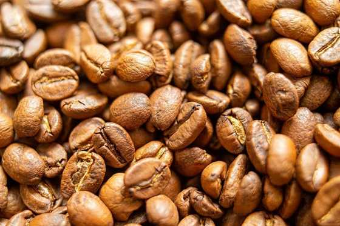
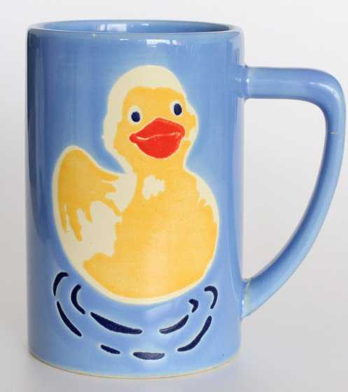

ABOUT
店のこと
確認できたことと、制作側の想像を分けてご紹介します。
確認できていること
- 店名は「CAFE66」、業態はカフェ(三沢市春日台1丁目152-522)
- オーナーは陽子さん(「YOKOママ」)
- 働く仲間に、美味しくて元気になる朝ごはんを食べさせたい、という想いから生まれた
- 2021年にオープン(2021年11月1日とする記事あり)
- 三沢市春日台の小高い丘の上にあり、白い建物が目印とされている
- 紹介記事では、朝ごはん・日替わりランチ・ティータイムの手作りお菓子を提供と紹介されている(内容は変わることがあります)
- カウンター席とテーブル席、Wi-Fiありと紹介されている
- 営業時間・定休日・価格・電話は準備中

制作側のイメージ
「66」という名前について
店名「66」の由来や意味は、確認できた資料に記載がありませんでした。ここから先は「店名から連想した制作側のイメージ」で、お店の意味づけではありません。数字が並んだ覚えやすい名前で、朝6時台から始まる一日の気配を思い浮かべました(紹介記事には朝6時30分からの営業との記載がありますが、現在の時間は準備中です)。
朝ごはんの香りを連想させる、豆・お茶・食器のイメージ写真です。




